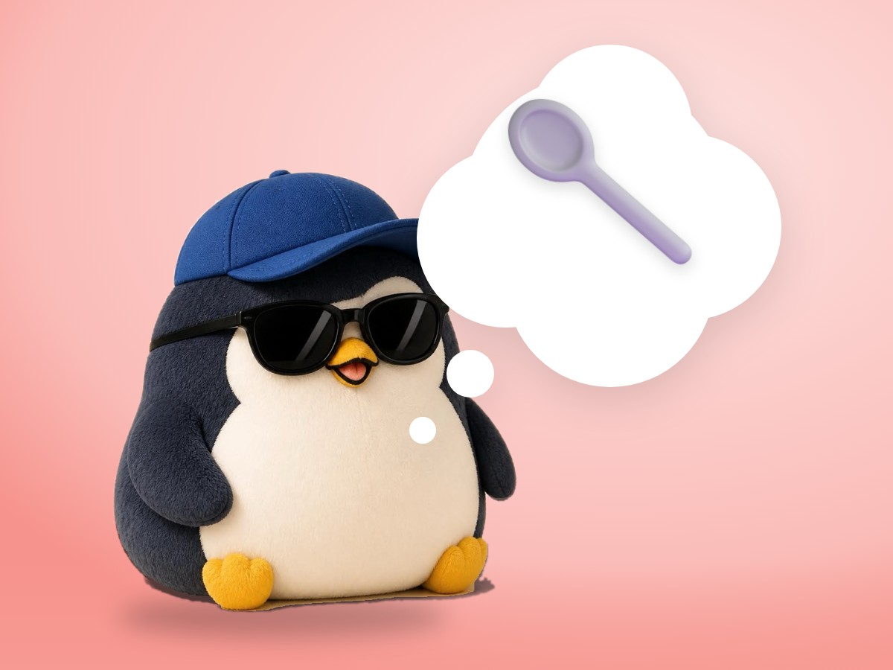

🧪 LAB · 試作 — AIが読書メモから一気に作った記事です。本番の一覧には出していません · 試作の一覧
🐧 EVERYDAY LIFE⚡ 20 SEC
The more sure you feel, the earlier you should show it 🥄

Sure Things
The more you think "This will surely work," the more it may not reach the other person.
Not Too Long
So I try not to spend a long time making it alone, with only my belief.
Cooking Example
In cooking, a small taste first is better than a big dish that took 10 hours.
⚡ TRY IT
When do you give a taste?
🍛 The curry takes 10 hours. Your friend cannot eat spicy food, but you do not know that yet.
🥄 Give a taste after 1 hours
Choose the hour, then start cooking!
🔥 Cooking…
🥵 Friend: "Too spicy for me!"
🎉 Early taste, easy fix! Less spice, and done.
😅 OK, but you had to make many hours again.
😭 A big pot of spicy curry… nobody can eat it. Start over!
⏱️ Total: 0 hours
Easy Fix
If you see the reaction early, it is easy to fix.
📚 I wrote this from my notes on books and blogs I have read.